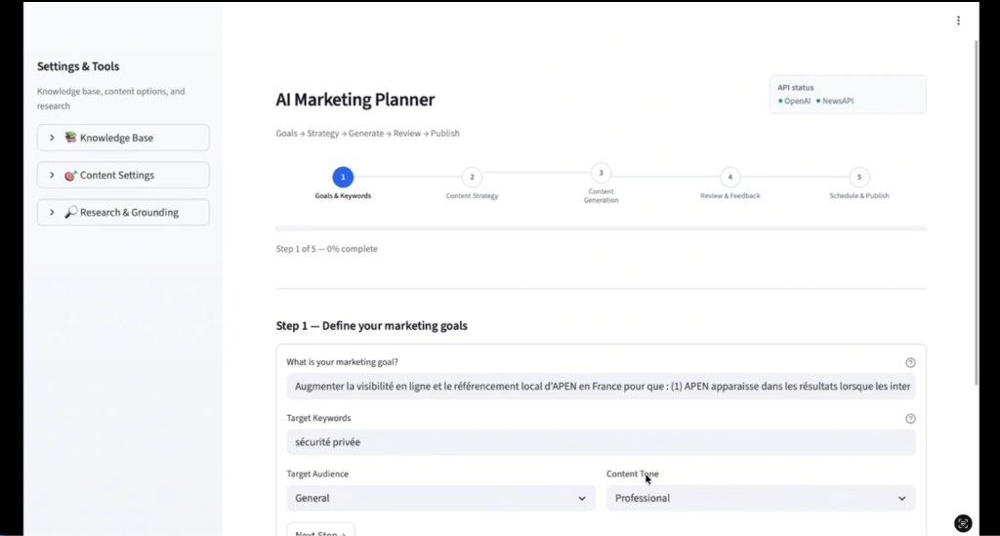

Engineering degree — École Nationale Polytechnique (Algiers). Master in AI & data science — Paris-Cachan. Pairs systems & maths with ML/DL, NLP, LLMs, GenAI — the stack used in live client work, not a parallel universe.
Profile & current role
Who · where · how I workWho. Data Scientist, AI Engineer, and Associate Professor profile — experience across classical ML, deep learning, NLP, LLMs, RAG and generative AI. Pedagogy is explicitly tied to industrial reality: what works in production, not only in notebooks.
About Dhiya Lecheheb
Background · stance · pathBuilt for mixed cohorts: engineers, business & analytics profiles, professionals upskilling. Beyond “it runs”: learners must justify choices — data quality, metrics, deployment, and when GenAI vs classical ML is appropriate.
English or French (French C2). Modules and workshops can align to bachelor, master, or executive-style intensives — scoped with each partner.
Mentoring & teaching across Kedge, SUPINFO, NEXA, Institut Saint Aspais — coordinated with other faculty when programmes need depth in GenAI, applied AI, or security-aware delivery.
Career arc — research to client AI
2022
NLP & CV — trend detection (transformers), motion analysis with deep learning & real-time pipelines
2023–24
Finance DS (apprenticeship) — RAG, PEFT, zero-shot classification in investment contexts
2024 →
IAWARE — custom AI delivery, advanced teaching, marketing & voice client systems
Education
Master in Artificial Intelligence & Data Science — Paris-Cachan, France.
Engineering degree — École Nationale Polytechnique (Excellence in Science & Technologies), Algiers.
Technical stack
TensorFlowPyTorchKerasOpenCVspaCyscikit-learn
LLMsRAGGenAIPythonSQL
IAWARE — current role
AI Engineer (freelance) · Nov 2024 – present · Paris.
- Custom AI solutions — design and deployment of bespoke systems aligned with client goals.
- Advanced AI teaching — data processing, ML, DL, sector applications across marketing and voice.
- Delivery & mentoring — supporting learners from foundations through applied projects; clarity of outcomes and employability.
Professional experience (selected)
Nov 2024 – present
AI Engineer — IAWARE, Paris
Custom AI solutions; advanced teaching (ML / DL / NLP / GenAI); mentoring at Kedge, NEXA, SUPINFO.
Sep 2023 – Sep 2024
Data Scientist (apprenticeship) — Software Club, Paris
AI in investment & finance; RAG; PEFT; zero-shot classification.
Oct 2022 – Apr 2023
AI Research Scientist (internship) — My Team, Paris
Laban motion analysis; dynamic time warping (~90% accuracy); real-time DL with TensorFlow / OpenCV.
May 2022 – Oct 2022
NLP Data Scientist (internship) — Consult-Trend, Nice
Fashion trend detection; spaCy transformers; web scraping.
Applied client projects
Two equal-weight teaching cases Live deliveryEach case is documented the same way for teaching: business objective, how the system works, technologies, and what students take away for their own builds. Neither is positioned as more “central” than the other — they illustrate different product surfaces: text/RAG and speech.
AI-powered marketing content platform

Objective. Automate end-to-end marketing content from a single strategic goal: SEO blog articles, social posts, marketing strategy, and publication calendars — with quality and brand constraints.
How it works
- RAG with FAISS vector store for grounded context.
- Runtime switching between GPT-4o and GPT-4o-mini; temperature and variant control.
- Multi-variant generation for A/B testing; keyword coverage and content validation.
- Session memory, scheduling (e.g. APScheduler), deployment on Render.
Technologies: OpenAI API (GPT-4o), LangChain, FAISS, Streamlit, Python, NewsAPI, SerpAPI, FastAPI-ready stack, pdfplumber, python-docx.
DemoMarketing platform (video)
Student learning outcomes
End-to-end LLM pipelines with RAG; prompt engineering at scale (tone, language, keywords); multi-channel content; responsible grounding with news and search citations; cloud deployment patterns.
24/7 voice reception agent

Objective. Automate first-line phone interaction: appointment booking, intent qualification, smart routing, and structured callback summaries for business clients.
How it works
- Webhook-driven inference; OpenAI Whisper for speech-to-text.
- Intent routing via YAML configuration with LLM fallback when needed.
- Event-driven automation; integration with calendars and notifications.
- Backend deployed in the cloud (e.g. Render) with clear API boundaries.
Technologies: Python, FastAPI, OpenAI API (Whisper + GPT), Vapi (voice), Google Calendar API, SMTP, REST, Docker-ready serving.
Student learning outcomes
Production voice agents; coupling speech and LLMs in low-latency settings; separating business rules from model inference; robust integration design.
Curriculum breadth
Foundations · methods · practice Slide & course libraryAlongside the industry case studies and security tracks, teaching draws on a broad AI/ML curriculum — from classical methods to LLMs, research literacy, project discipline, and specialised topics such as vulnerability and process mining. The list below reflects the scope of material developed for classroom use. Live demos of the marketing and voice cases are linked under Applied client projects above.
Topic areas covered
Machine learning
Classification
Unsupervised learning
Deep learning
Gaussians
LLMs
Vulnerability
Process mining
- Core ML & DL — supervised and unsupervised learning, classification, deep learning architectures and training practice.
- Probabilistic modelling — Gaussian-based methods where they support intuition and generative thinking.
- Large language models — LLM concepts and applications aligned with current industry use.
- Research skills — how to read research papers; research-oriented sessions to bridge papers and implementation.
- Project discipline — structure and management of machine learning projects; capstone-style final projects integrating ML/DL.
- Process mining — introduction to process discovery and analysis for data-driven operations (complementary to predictive ML).
- Vulnerability — security and weakness analysis in ML/AI systems (aligned with the vulnerability-assessment teaching track).
Course portfolios
Ready-to-deliver modulesPython avancé & Cassandra
3 sequences · ~12 pages each · 9 MCQs · expert project (REST, CRUD MVC, or data science). Flask, Django, FastAPI, CQL — FR + EN review.
Deployment & Maintenance of ML Models
Flask/WSGI labs, FastAPI, edge ONNX, monitoring — production-oriented syllabus with applied labs.
Pedagogy & learner fit
How courses are run
Collaborative inquiry
Students present and defend projects; peers ask technical questions. Argument and clarity matter as much as code.
AI as a tool, not a crutch
AI-assisted research is allowed; students must still explain, critique, and extend outputs — especially for GenAI-heavy assignments.
Industry-grounded content
Examples and assignments map to the cases above (marketing, voice) so theory connects to shipping constraints: latency, cost, safety, and maintainability.
Who the audience is
- Engineering and CS students; business and analytics profiles; working professionals upskilling.
- Partner schools include Kedge, SUPINFO, Institut Saint Aspais, NEXA — with room to coordinate alongside other instructors.
- Coverage uses entry diagnostics, modular paths, case studies, and feedback loops.
Evaluation
- Quality of questions — originality and technical depth of what students ask under scrutiny.
- Depth of answers — accuracy, honesty, and reasoning when challenged.
Teaching tracks & proposed programmes
Beyond the client cases Security · programmesSpecialised modules complement the project-based core: risk assessment for AI systems, robustness and cybersecurity across the AI lifecycle, and four optional programme lines you can scope with your institution.
Vulnerability assessment — AI & GenAI systems
Purpose. Train learners to map threats, prioritise risk, and choose controls for systems that include LLMs, APIs, agents, and traditional ML components.
- Threat modelling: data, training, model weights, inference endpoints, third-party tools, human-in-the-loop steps.
- Attack-surface mapping and severity; prevent / detect / respond framing.
- LLM-specific issues: prompt injection, unsafe tool use, data exfiltration patterns.
- Outcomes: concise risk register; red-style scenarios; documentation that both engineers and programme leads can use.
AI robustness & cybersecurity (lifecycle module)
Purpose. Treat robustness as a system property — not only test accuracy — and connect it to organisational, regulatory, and operational security.
- Core ideas: robustness under perturbations and adversarial inputs; algorithm-level vs model-level framing; alignment with common regulatory language (e.g. high-risk AI lifecycle themes).
- Holistic lens: organisation (strategy), regulation (stability), cyber (protection), system (trust).
- Threats: poisoning, adversarial evasion, prompt abuse, weak operational security around models.
- Risk & controls: ISO-style risk thinking; gross vs residual risk; control actions and action plans for AI operations.
Proposed programmes A–D (scoping with your school)
- A — AI for digital marketing strategy & automation. Campaign and content architecture; AI-assisted creation; measurement and ROI; brand-safe use of GenAI.
- B — AI vulnerability assessment & red-teaming (business systems). Threat models, scenarios, mitigations, audit-style reporting.
- C — Cybersecurity for AI systems / AI for cybersecurity. Securing AI pipelines and using AI in security operations (detection, triage, documentation).
- D — Basics of finance for AI in trading & investment. Markets and risk–return basics; data-to-signal workflows; backtesting and model risk; ethics and compliance for AI-assisted decisions.
IAWARE — students & universities
Beyond scheduled teaching hours, IAWARE can support partner schools and learners with career and staffing alignment.
For students
Profiles, alternance & hiring fit
- Structured help on CV, LinkedIn, and portfolio so the narrative matches real roles (including alternance and first internships).
- After a structured skills and goals review, introductions to recruiters or partners when there is a strong match on level, stack, and sector.
For universities & schools
Instructor & skill matching
- Support mapping module needs (topics, depth, format, language) to instructor profiles.
- Help ensure each cohort is staffed with the right technical and domain expertise — GenAI, conversational AI, multimodal delivery, security-aware AI, etc.
Contact. dhiya.lecheheb@iaware.ai · LinkedIn · Paris, France — programmes and workshops can be delivered in English or French depending on audience and institution.